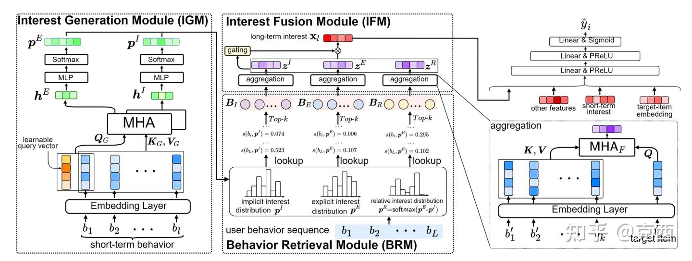

0. 写在前面
这篇论文讨论的是 CTR 预估里的长期用户兴趣建模。它的关键词看起来很新：“Generative Long-term User Interest Modeling”，但它并不是用大语言模型生成推荐结果，也不是直接生成 item ID。它真正做的事情是：
用用户近期行为生成几个离散的兴趣分布，然后用这些分布去长期历史行为里查表召回，最后再和目标 item 做精排式融合。
如果把传统长序列 CTR 方法理解成“拿目标 item 去历史行为里找相似行为”，那么 GenLI 的思路就是“先根据用户近期状态生成兴趣雷达图，再用这个雷达图去长历史里挑有代表性的行为”。
这篇论文最值得关注的不是某个复杂网络结构，而是它重新组织了长序列建模的计算路径。传统方法把检索中心放在 target item 上，GenLI 把检索中心先放回用户自己身上。
1. 背景：CTR 预估为什么需要长序列兴趣建模
CTR 预估要判断用户是否会点击某个候选 item。输入通常包括用户特征、目标 item 特征、上下文特征，以及用户历史行为。历史行为非常关键，因为它承载了用户偏好，代表了用户在一定时间的兴趣。
用户兴趣可以粗略分成两类：
- 短期兴趣：最近几次点击、浏览、加购等行为，反映当下意图。
- 长期兴趣：更长时间窗口内的历史行为，反映稳定偏好、消费习惯和多样兴趣。
只看短期兴趣会有一个问题：用户的当下行为可能很窄。例如用户最近在看火锅，但长期经常点咖啡、买电影票、看亲子套餐。如果候选 item 是咖啡券，只看最近火锅行为可能无法充分判断点击概率。
但直接建模长期行为也很难。一个真实工业系统里，一个用户可能有几百甚至上千条历史行为。如果对每条行为都做复杂 attention，线上推理延迟和资源成本会非常高。所以长序列 CTR 模型通常要解决两个问题：
- 从大量历史行为中选出少量有用行为。
- 用较复杂模型对这些少量行为做精确建模。
这就产生了两阶段框架。
2. 传统两阶段框架：GSU + ESU
论文把现有长序列兴趣建模总结为一个常见范式：
- GSU, General Search Unit：粗召回，从长期历史行为中选出 top-k 条与目标 item 相关的行为。
- ESU, Exact Search Unit：精建模，用 attention 等机制聚合召回行为，生成长期兴趣特征。
这个框架的好处是显然的：不用对全量长序列做重模型，只对 GSU 选出的少量行为做 ESU。
几类典型方法可以这样理解：
| 方法 | GSU 粗召回思路 | 主要特点 |
|---|---|---|
| SIM-hard | 选择与目标 item 同类别的历史行为 | 简单快，但语义粗 |
| SIM-soft | 用 embedding inner product 选相似行为 | 比类别匹配细，但仍需逐条匹配 |
| ETA | 用 SimHash 后的 Hamming distance 检索 | 用哈希降低匹配成本 |
| SDIM | 用多轮哈希碰撞采样行为 | 进一步优化长序列采样 |
| TWIN | GSU 与 ESU 使用一致的 target attention | 减少两阶段相似度不一致问题 |
这些方法虽然实现不同，但大多有一个共同前提：历史行为是否重要，要看它和当前目标 item 是否相似。
GenLI 正是要挑战这个前提。
3. 传统 target-centered GSU 的两个问题
论文认为，现有 GSU 主要存在两个问题。
3.1 问题一：只看目标相关兴趣，长期兴趣不完整
用户兴趣通常是多峰的。一个用户可能同时对外卖、酒店、电影、咖啡、亲子活动感兴趣。传统 GSU 如果只围绕目标 item 检索，就会只保留与目标 item 接近的那一部分历史行为。
这会导致长期兴趣特征变窄。
假设用户历史行为如下：
咖啡 -> 奶茶 -> 儿童乐园 -> 烧烤 -> 火锅 -> 电影票 -> 亲子餐厅 -> 咖啡当前目标 item 是“火锅优惠券”。传统 target-centered GSU 大概率召回火锅、烧烤、餐饮相关行为。这样确实能建模目标相关兴趣，但用户对亲子、电影、咖啡的长期偏好会被弱化甚至丢掉。
这些被丢掉的兴趣是否一定无用？未必。用户是否点击火锅券，可能不仅取决于“是否喜欢火锅”，还取决于当前生活场景、消费习惯、活动偏好、近期偏好迁移等更完整的兴趣结构。论文认为，只保留目标附近兴趣会让长期兴趣表示不完整且有偏。
3.2 问题二：逐条目标匹配成本随序列长度增长
传统 GSU 通常需要对每条历史行为计算一个分数：
\(score_i = similarity(target_{item}, behavior_i)\)
无论 similarity 是 inner product、Hamming distance，还是 target attention，它都要遍历长序列。随着行为序列从 100 增加到 500、1000，线上成本会增长。
更重要的是，这种 pairwise matching 只比较“目标 item”和“单条历史行为”，没有显式利用历史行为之间的交互信息。例如“连续看了火锅、烤肉、夜宵”比单独一条“火锅”更能说明用户当前餐饮偏好，但逐条匹配很难捕捉这种局部模式。
所以论文提出：不要再只靠目标 item 对每条历史行为打分。先从短期行为生成用户当前兴趣分布，再让长期行为去这个分布里查自己的分数。
4. GenLI：三个模块进行建模

GenLI 由三个模块组成：
- IGM, Interest Generation Module：根据短期行为生成兴趣分布。
- BRM, Behavior Retrieval Module：根据兴趣分布从长期历史行为中召回行为。
- IFM, Interest Fusion Module：把召回行为与目标 item 交互融合，生成长期兴趣特征。
整体流程可以写成：
短期行为序列
-> IGM 生成隐式/显式/相对兴趣分布
-> BRM 用兴趣分布给长期历史行为查表打分
-> 每类兴趣分别召回 top-k 行为
-> IFM 用目标 item attention 聚合召回行为
-> gate 融合三类兴趣 embedding
-> CTR MLP 输出点击概率这里有一个非常关键的设计：IGM 和 BRM 阶段是 target-independent 的，也就是不依赖当前目标 item。目标 item 直到 IFM 阶段才进入。
这不是说 GenLI 不做 target-aware 建模，而是它把 target-aware 建模后移了：
- 召回阶段：先问“用户当前有哪些兴趣？”
- 融合阶段：再问“这些兴趣和当前目标 item 如何交互？”
这个拆分让 GenLI 同时获得了多样性和效率。
5. IGM 详解：如何生成用户兴趣分布
IGM 的输入是用户最近的 N 条行为。论文称这些为 short-term behaviors。这样设计的理由是：短期行为最能反映用户当前实时兴趣，而生成的兴趣分布又会用于筛选长期历史行为，因此它相当于用“当前状态”去激活“长期记忆”。
5.1 短期行为编码
每个行为先经过 embedding layer 得到低维向量。设短期行为 embedding 序列为：
\(e_1, e_2, ..., e_N\)
这些 embedding 会作为 multi-head attention 的 key 和 value：
\(K = V = [e_1; e_2; ...; e_N]\)
query 则有两类：
- 最新行为的 embedding，代表当前最直接的兴趣信号。
- 一个可学习 query，用来自动捕捉短期行为序列中的交互模式。
论文把这两类 query 拼接起来，再输入 MHA：
\(Q = [e_latest, e_learnable] \\ h = MHA(Q, K, V)\)
这样得到的 hidden interest embedding h 同时包含两种信息：
- 最新行为带来的即时意图。
- 短期行为之间的组合模式。
5.2 从 hidden embedding 到离散分布
接着，IGM 用 MLP + softmax 生成一个长度为 M 的离散分布：
\(p = softmax(MLP(h))\)
论文默认 M = 4096。这个分布不是 item vocabulary 上的完整分布，而是一个固定长度的兴趣分布表。长期行为会通过 ID % M 映射到表中某个位置，然后取对应概率作为分数。
这一步是 GenLI 的关键抽象：模型不直接生成某个 item，而是生成一个可被历史行为查表的兴趣空间。
5.3 三类兴趣分布：隐式、显式、相对
GenLI 不只生成一个分布，而是生成三个分布，分别描述用户兴趣的不同侧面。
显式兴趣分布 \(p_E\)
显式兴趣来自用户点击。点击是用户明确表达兴趣的行为，因此与 CTR 主任务关系最直接。
训练显式兴趣分布时，论文使用点击 item 作为监督信号。直观地说，如果用户点击了某个 item，那么这个 item 映射到分布中的位置应该有更高概率：
\(maximize \ log \ LOOKUP(clicked_{item}, p_E)\)
这相当于让分布学会“用户当前最可能主动选择什么”。
隐式兴趣分布 \(p_I\)
隐式兴趣来自曝光 item。曝光 item 是平台根据历史日志选择并展示给用户的内容，虽然用户不一定点击，但它仍然代表平台对用户偏好的某种估计。
论文认为，隐式兴趣相对更稳定，能补充点击兴趣的短期性。点击行为更尖锐、更当前；曝光行为更宽泛、更平滑。
训练隐式兴趣分布时，模型会提高曝光 item 在分布中的概率：
\(maximize \ log \ LOOKUP(exposed_{item}, p_I)\)
工业数据集中有真实曝光日志，因此可以直接训练。公开数据集缺少曝光信息，论文用近期相似行为采样近似曝光 item。这一点是复现时需要注意的。
相对兴趣分布 \(p_R\)
相对兴趣分布由显式兴趣和隐式兴趣构造：
\(p_R = softmax(p_E - p_I)\)
用户点击不是在真空中发生的，而是在一组被曝光内容中做选择。没有点击某个曝光 item，不一定代表完全没兴趣，可能只是相对另一个 item 不够感兴趣。
因此， \(p_E - p_I\) 可以看作“用户真实点击兴趣”相对于“平台曝光推断兴趣”的偏移。它描述了用户当前选择偏好的变化方向。
举个例子：
平台认为用户可能喜欢：火锅、烧烤、奶茶
用户实际点击更多：奶茶、咖啡那么相对兴趣分布就会突出“用户当前从正餐向饮品偏移”的信号。这个信号未必能被单独的显式或隐式兴趣充分表达。
6. BRM 详解：为什么 lookup 能替代 pairwise matching
BRM 的任务是从长期历史行为中选出符合当前兴趣分布的行为。
传统方法对每条行为做：
\(score_i = similarity(target_{item}, behavior_i)\)
GenLI 做：
\(index_i = ID(behavior_i) \% M \\ score_i = p[index_i]\)
这意味着每条历史行为不再和目标 item 逐条比较，而是通过 ID 映射到兴趣分布中的一个桶，然后取桶上的概率。
6.1 lookup 的本质：哈希化的兴趣打分
ID % M 实际上是一个哈希映射。因为真实 item 数通常远大于 M，所以多个行为可能映射到同一个桶，存在碰撞。M 越大，碰撞越少，但分布维度越大。
论文实验发现，M 增大时 AUC 会先提升后趋于稳定，最终选择 4096 作为折中。这说明 lookup 的效果确实受哈希碰撞影响，但不需要无限增大分布维度。
这个设计很像把“庞大的 item 空间”压缩到“较小的兴趣桶空间”。模型不是精确记住每个 item，而是学习哪些兴趣桶更符合用户当前状态。
6.2 每类兴趣分别召回
对于 \(p_I、p_E、p_R\) 三个分布，BRM 分别给长期行为打分，并各自取 top-k。
假设 k = 20，那么最终得到：
隐式兴趣召回 20 条
显式兴趣召回 20 条
相对兴趣召回 20 条
总共 60 条这样做比只用一个分布更稳，因为不同兴趣分布会激活长期行为中的不同部分。显式分布可能召回近期点击偏好相似行为，隐式分布可能召回稳定偏好行为，相对分布可能召回兴趣变化相关行为。
6.3 为什么它比目标相似召回更“完整”
传统 GSU 是 target-centered，只会问：
这条历史行为像不像当前目标 item？GenLI 的 BRM 问的是：
这条历史行为是否符合用户当前的某类兴趣分布？这两个问题不同。前者更适合召回目标附近行为，后者更适合召回用户兴趣结构中的代表性行为。GenLI 随后仍会在 IFM 阶段用目标 item 做 attention，因此它不是放弃目标相关性，而是把召回阶段从单一目标约束中释放出来。
这也是论文说 GenLI 能提升兴趣多样性和完整性的原因。
7. IFM 详解：target-independent 召回后如何回到 CTR 任务
如果 GenLI 的召回阶段完全不看目标 item，会不会导致召回的行为和当前目标无关？论文的答案是：召回阶段先保证兴趣完整，融合阶段再引入目标相关性。
IFM 的做法是对三类召回行为分别做 target attention。
以隐式兴趣召回行为为例，设召回行为 embedding 为：
\(e'_1, e'_2, ..., e'_k\)
将目标 item embedding 作为 query，召回行为作为 key/value：
\(z_I = MHA(target_{embedding}, retrieved_{behaviors}, retrieved_{behaviors})\)
显式兴趣和相对兴趣同理得到：
\(z_E, z_R\)
然后拼接：
\(z = concat(z_I, z_E, z_R)\)
最后通过 gate 机制生成长期兴趣特征：
\(g = sigmoid(MLP(z)) \\ x_{long} = (g * z) W\)
gate 的作用是动态调节不同兴趣信息的重要性。某些场景下显式兴趣更重要，某些场景下隐式兴趣更重要，某些场景下相对兴趣能提供额外修正。
最终 CTR 输入包括：
- GenLI 生成的长期兴趣特征。
- 短期兴趣特征。
- 其他 side information。
- 目标 item embedding。
再通过 MLP 输出点击概率。
8. 训练目标：主任务和生成任务联合优化
GenLI 是端到端训练的，loss 包括三部分：
\(L = L_{CTR} + alpha * L_{implicit} + beta * L_{explicit}\)
其中：
- L_CTR 是点击率二分类任务的交叉熵。
- L_implicit 约束隐式兴趣分布提高曝光 item 概率。
- L_explicit 约束显式兴趣分布提高点击 item 概率。
相对兴趣分布不是单独监督出来的，而是由 p_E 和 p_I 的差异构造出来。
这个联合训练方式有两个好处：
- 兴趣分布不是离线规则生成，而是能随着 CTR 目标一起优化。
- 生成分布本身有点击和曝光监督，不完全依赖最终 CTR loss 的间接反馈。
9. 复杂度：GenLI 的工程价值在哪里
论文的复杂度分析是理解 GenLI 工业价值的关键。
设：
L = 长期行为序列长度
N = 短期行为长度
R = 总召回行为数
d = hidden dimension
M = 兴趣分布维度GenLI 的主要复杂度为：
O(L + (N + R)d)因为：
- IGM 对短期行为建模，成本约 O(Nd)。
- BRM 对长期行为逐条 lookup，成本 O(L)。
- IFM 对召回行为做 attention，成本约 O(Rd)。
当 N 和 R 都是较小常数时，整体接近 O(L)。而且这里的 O(L) 是非常轻的查表，不是逐条 inner product 或 attention。
论文对比的单行为打分复杂度如下：
| 方法 | 单条行为打分方式 | 单行为复杂度 |
|---|---|---|
| SIM | inner product | O(d) |
| ETA | Hamming distance | O(h) |
| SDIM | hash collision | O(h log d) |
| TWIN | target attention | O(d) |
| GenLI | distribution lookup | O(1) |
所以 GenLI 的优势会随着历史行为长度增加而更明显。论文中的推理时间曲线也说明了这一点：序列越长，GenLI 相比 SIM 和 TWIN 的效率优势越突出。
10. 实验设置：论文怎么验证
论文用了两个公开数据集和一个美团工业数据集。
| 数据集 | 用户数 | item 数 | 类别数 | 样本数 |
|---|---|---|---|---|
| Amazon Book | 75,053 | 358,367 | 1,583 | 150,016 |
| Taobao | 987,994 | 34,196,612 | 5,597 | 7,956,431 |
| Industrial | 240 million | 1.1 million | 160 | 1.1 billion |
序列长度设置：
- Amazon：长期行为长度 100，短期行为长度 10。
- Taobao：长期行为长度 500，短期行为长度 100。
- 工业数据：长期行为长度 1000，短期行为长度 100。
模型设置里有几个重要点：
- embedding 维度为 8。
- GenLI 的兴趣分布维度 M = 4096。
- MHA 使用 4 个 head，每个 head hidden dimension 为 8。
- GenLI 每个兴趣分布召回 20 条，总召回数 60。
- baseline 也召回 60 条，保证比较公平。
- 优化器 Adam，学习率 0.001，batch size 256。
评价指标：
- 离线实验用 AUC。
- 在线实验用 CTR gain 和 RPM gain。
- 效率用 batch 推理平均时间衡量，batch size 为 8192。
11. 主实验结果：GenLI 准确率和效率都更好
公开数据集结果：
| 模型 | Amazon AUC | Taobao AUC |
|---|---|---|
| DIN | 0.7267 | 0.8893 |
| Avg-Pooling-long | 0.7353 | 0.8777 |
| DIEN | 0.7409 | 0.9352 |
| SIM-hard | 0.7455 | 0.9403 |
| SIM-soft | 0.7487 | 0.9418 |
| ETA | 0.7492 | 0.9438 |
| SDIM | 0.7429 | 0.9405 |
| TWIN | 0.7503 | 0.9449 |
| GenLI | 0.7564 | 0.9552 |
可以看到，GenLI 在 Amazon 上相比最强 baseline TWIN 提升 0.0061 AUC，在 Taobao 上提升 0.0103 AUC。CTR 任务里 0.001 的 AUC 提升都可能有业务意义，因此这个提升幅度相当可观。
几个现象值得分析：
第一，DIN 和 DIEN 整体弱于长序列方法。原因很直接，它们主要建模短期行为，不能充分利用长期兴趣。
第二，Avg-Pooling-long 虽然使用了长序列，但效果并不好。简单平均会把大量无关行为和噪声混在一起，长期序列越长，噪声问题越明显。
第三，两阶段模型普遍强于简单 pooling，说明“先检索再精建模”是长序列 CTR 的有效范式。
第四，GenLI 超过所有两阶段 baseline，说明它的 target-independent 兴趣分布召回确实比单纯目标匹配召回更有效。
工业数据集结果：
| 模型 | AUC | 推理时间 ms |
|---|---|---|
| Avg-Pooling-long | 0.7424 | 2.8 |
| SIM-hard | 0.7437 | 5.6 |
| SIM-soft | 0.7432 | 6.8 |
| TWIN | 0.7441 | 7.9 |
| GenLI | 0.7463 | 4.6 |
这张表是全篇最有工业含义的结果。GenLI 的 AUC 高于 TWIN，同时推理时间从 7.9 ms 降到 4.6 ms。它不是单纯牺牲效果换效率，也不是单纯堆重模型换效果，而是在效果和效率之间取得了更好的折中。
与 Avg-Pooling-long 相比，GenLI 慢一些，但 AUC 高很多；与 TWIN 相比，GenLI 更准且更快。这正是论文想证明的点。
12. 消融实验：收益到底来自哪里
12.1 去掉 IGM 后性能大幅下降
消融结果：
| 变体 | Amazon | Taobao |
|---|---|---|
| GenLI w/o IGM | 0.7361 | 0.9227 |
| GenLI w/o 隐式兴趣 | 0.7465 | 0.9413 |
| GenLI w/o 显式兴趣 | 0.7400 | 0.9372 |
| GenLI w/o 相对兴趣 | 0.7532 | 0.9526 |
| GenLI | 0.7564 | 0.9552 |
去掉 IGM 后下降最明显，Amazon 从 0.7564 掉到 0.7361，Taobao 从 0.9552 掉到 0.9227。说明 GenLI 的核心收益确实来自兴趣生成模块，而不是后面简单多加了 attention 或 gate。
如果没有 IGM，BRM 近似随机选择行为，长期兴趣建模质量会显著下降。这也反过来证明：生成的兴趣分布确实能指导有效召回。
12.2 显式兴趣最关键，隐式兴趣也重要
去掉显式兴趣分布的下降比去掉隐式兴趣更大。原因很自然：CTR 任务最终预测点击，点击监督和主任务最一致，因此显式兴趣分布对点击概率最直接。
但隐式兴趣也有明显贡献。曝光 item 虽然不是用户主动点击，但它反映平台对用户偏好的历史估计，可以提供更稳定、更宽泛的兴趣背景。
相对兴趣贡献最小，但仍然有效。它更像是对“曝光但未必点击”和“最终点击”之间差异的补充建模，帮助模型捕捉兴趣迁移。
12.3 短期行为长度：越长越好，但有边际收益
论文还研究了 IGM 输入短期行为长度的影响。结果显示，短期行为长度增加时 AUC 提升，但到一定长度后收益趋缓。
这说明：
- 更多短期行为能提供更丰富的实时兴趣交互模式。
- 但过长的短期序列会引入噪声和额外计算，收益不再明显。
所以 IGM 使用“近期一小段行为”是合理的。它不是要把全量长期行为都丢进生成器，而是用短期行为生成当前兴趣状态，再去长序列检索。
12.4 召回行为数 R：GenLI 在小预算下更有优势
论文比较了不同召回行为数下 SIM-soft、TWIN、GenLI 的表现。整体趋势是：R 增大时，各方法 AUC 都先上升后趋于平稳。
这个现象很容易理解。召回行为太少，信息不足；召回行为增加，覆盖更多兴趣；但再继续增加，就会引入噪声且计算变重。
更有意思的是，R 较小时 GenLI 相比 TWIN 的优势更大。当 R = 15 时，GenLI 在两个数据集上相比 TWIN 分别提升约 1.65% 和 1.62%；当 R = 75 时，提升变成约 0.88% 和 1.31%。
这说明 GenLI 的强项在于“有限召回预算下选得更准”。如果召回数量足够大，所有方法都能覆盖更多历史行为，检索质量的重要性会下降。反过来，当线上延迟限制要求只能取少量行为时，GenLI 的价值更明显。
12.5 分布维度 M：哈希碰撞与效率的折中
兴趣分布维度 M 控制 lookup 表的长度。因为行为通过 ID % M 映射到分布位置，所以 M 越小，碰撞越多；M 越大，碰撞越少。
实验显示，M 增大时 AUC 会略有提升，但随后趋于稳定。论文选择 4096，是因为它在效果和效率之间比较均衡。
从工程角度看，这个超参很关键。如果业务 item 空间更大、兴趣更复杂，M 可能需要重新调；如果线上资源更紧，M 也可能需要压缩。
13. 在线 A/B：真正落地的证据
论文在美团外卖平台 30% 真实流量上进行了 6 天在线 A/B 测试。baseline 是线上服务中的强 CTR 模型。
结果：
| 模型 | CTR Gain | RPM Gain |
|---|---|---|
| Base | 0 | 0 |
| GenLI | +0.776% | +1.567% |
RPM 是 Revenue Per Mille，代表每千次曝光收入。对广告系统来说，1.567% 的 RPM 提升是非常有业务价值的。
这部分结果也说明，GenLI 的收益不是只存在于公开数据集或离线指标里，而是可以转化为线上收益。论文还提到该模型已经部署到真实广告系统中，服务数亿用户。
14. 和 TWIN 的关键区别
TWIN 是论文中最强的 baseline，因此值得单独比较。
TWIN 的核心是让 GSU 和 ESU 使用一致的 target-behavior attention，解决两阶段检索和精排打分不一致的问题。它仍然是 target-centered：目标 item 参与历史行为打分。
GenLI 则做了另一种拆分：
| 维度 | TWIN | GenLI |
|---|---|---|
| 召回中心 | 目标 item | 用户兴趣分布 |
| GSU 是否依赖目标 | 依赖 | 不依赖 |
| 单行为打分 | target attention | distribution lookup |
| 是否利用短期行为生成状态 | 不是核心 | 是核心 |
| 优势 | target-aware 一致性强 | 多兴趣覆盖好，打分快 |
两者并不只是“谁的 attention 更好”的差异，而是检索范式不同。TWIN 强调目标与行为的一致匹配，GenLI 强调先生成用户兴趣状态，再从长期行为中激活相关记忆。
15. 这篇论文真正的创新点
我认为 GenLI 的创新可以概括成四点。
第一，生成对象从 item ID 转为兴趣分布。直接生成 item ID 容易面临超大词表、稀疏性和效率问题，生成兴趣分布则更轻、更适合 CTR。
第二，把长序列召回从 target-centered 改为 interest-centered。召回阶段先关注用户当前多类兴趣，而不是只围绕目标 item 找相似历史。
第三，用 lookup 代替逐条匹配，把单行为打分复杂度降到 O(1)。这对长序列线上服务非常重要。
第四，把显式、隐式、相对兴趣放在一个统一框架里。显式点击、隐式曝光、相对偏移分别对应用户兴趣的不同侧面，组合后比单一兴趣分布更完整。
16. 局限与可以继续改进的方向
GenLI 很有启发，但也不是没有问题。
16.1 ID % M 的哈希碰撞不可避免
lookup 机制高效，但 ID % M 会带来哈希碰撞。不同 item 可能落到同一个分布桶，导致分数共享。论文通过增大 M 缓解，但没有完全消除。
一个可能改进方向是使用多哈希、多表 lookup，或者学习式 hash，将语义相近的 item 更合理地映射到相近兴趣桶。
16.2 隐式兴趣依赖曝光日志
工业系统一般有曝光日志，但很多公开数据集没有。论文在公开数据集上用近期相似 item 近似曝光 item，这会引入一定偏差。
如果要复现或迁移到没有曝光日志的场景，需要重新设计隐式兴趣监督，例如用未点击候选、召回候选、session 内未选择 item 等替代信号。
16.3 短期行为质量会影响生成分布
IGM 依赖短期行为生成兴趣分布。如果用户近期行为很少、很噪，或者短期行为只是一次异常浏览，生成分布可能偏移。
后续可以考虑多时间尺度生成：
- session 级短期兴趣。
- 天级近期兴趣。
- 月级稳定兴趣。
然后再做多尺度分布融合。
16.4 目标 item 完全后置可能有利有弊
GenLI 在召回阶段不看目标 item，这提升了兴趣完整性，但也可能召回一部分与当前目标弱相关的行为。IFM 可以再用目标 item 做筛选，但召回预算有限时，这种无目标召回可能也会占用名额。
一个自然扩展是混合召回：一部分行为由 GenLI 的兴趣分布召回，一部分行为由 target-centered GSU 召回，然后统一融合。这样可能同时保留多样兴趣和强目标相关兴趣。
17. GenLI 如何工作
假设用户长期历史行为是：
咖啡、奶茶、火锅、亲子餐厅、电影票、烧烤、儿童乐园、咖啡、甜品、酒店最近短期行为是：
奶茶、甜品、咖啡IGM 看到短期行为后，可能生成：
- 显式兴趣分布：饮品、甜品相关桶分数高。
- 隐式兴趣分布：平台长期判断用户对本地生活消费、餐饮、休闲有稳定兴趣。
- 相对兴趣分布：近期偏好从正餐转向饮品甜品。
BRM 用这三个分布去长期行为里查表，可能召回：
- 显式兴趣召回：咖啡、奶茶、甜品。
- 隐式兴趣召回：火锅、亲子餐厅、电影票。
- 相对兴趣召回：咖啡、甜品、酒店。
如果当前目标 item 是“下午茶套餐”，IFM 会用目标 item 对这些召回行为做 attention，最终可能更重视咖啡、奶茶、甜品；如果目标 item 是“亲子餐厅券”，IFM 又可能更重视亲子餐厅、儿童乐园和稳定本地生活偏好。
这就是 GenLI 的精妙之处：召回阶段不被目标 item 过早限制，融合阶段再根据目标 item 动态选择。
18. 总结
GenLI 解决的是长序列 CTR 建模中的一个核心矛盾：历史越长，兴趣越丰富，但计算越贵、噪声越多。传统两阶段方法用 target-centered GSU 解决计算问题，却容易忽略用户潜在的多样兴趣。
GenLI 的方案是：用短期行为生成隐式、显式、相对三类兴趣分布；用分布 lookup 从长期历史行为中高效召回；再用目标 item attention 和 gate 进行融合。这样既保留了长期兴趣的多样性，又把单行为打分复杂度降到了 O(1)。
从结果看，GenLI 在公开数据集、工业数据集和线上 A/B 测试中都优于强 baseline。更重要的是，它提供了一种值得借鉴的建模范式：不要只问历史行为和目标 item 像不像，也要先问用户当前到底有哪些兴趣，再让长期历史为这些兴趣提供证据。